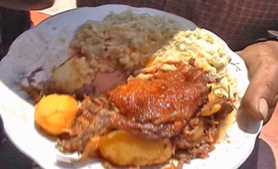
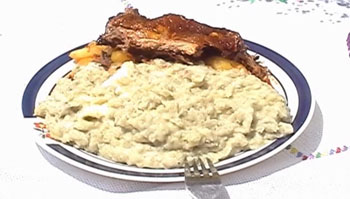
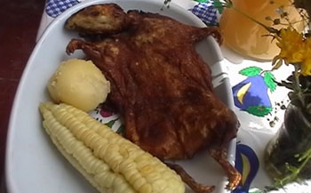
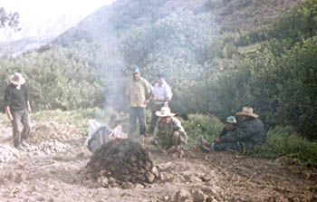
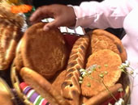
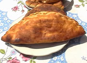
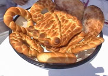
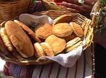
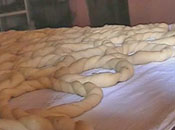
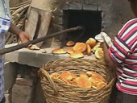

| |
| Presentación |
| Ubicación |
| Historia |
| Costumbres |
| Tradiciones |
| Atractivos Turísricos |
| Créditos |
| Comentario |
| Indice |
| Galeria |

| Platos Típicos de Lluta |
Picante de cuy.- Plato preparado durante la época del escarbo de acequia, compuesto por tamales típicos, quesillo frito, huevo frito, cuy al horno y picante. Los tamales son preparados en base a maíz y envueltos en la pancca del choclo; su relleno se hace con charqui, lonja, cebolla y ají colorado. Se sirve acompañado con panes típicos como los mestizos, los cucules, etc.  El blanco.- hecho a base a trigo pelado con bastante queso y leche, va acompañado de un guiso de ají y papas, para darle su sabor característico se le echa una ramita de huacatay.  Sango.- Para prepararlo se echa en un recipiente leche, manteca y sal, luego se añade trigo tostado y molido, se pone a coser a fuego lento, una vez cocido se revuelve y se granea, se sirve con ají de patitas u otros. Mazamorras.- hechas en base de harina de maíz, trigo, cebada o chuño, este plato se acompaña con un buen trozo de carne y lonja. Cuy chactado.- exquisito plato degustado en grandes acontecimientos y fiestas, se prepara con maíz molido y se sirve acompañado de papas sancochadas, llatan y mote.  Humintas.- elaboradas a base de maíz fresco, manteca de chancho, canela, azúcar y sal; lleva como relleno queso fresco. Se envuelve en las panccas de las mazorcas de maíz y se cocina en olla o en horno. Huatia.- papa cosida en hornos de “tocras” calentadas al rojo vivo. Las papas se entierran con las tocras por media hora; se puede coser a la vez choclo y carne. Este plato es común en la época de cosecha de papas.  Platos preparados a base de queso.- Lluta productor del queso rojo, el que se usa en la preparación de una gran variedad de platos: |
 |
 |
 |
 |
 Elaboración del pan |
 Horneado del pan |
| SITIOS DE INTERÉS | ||
|
||